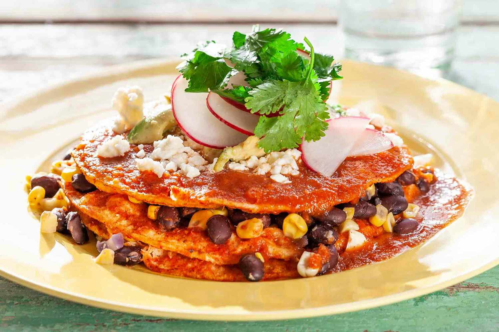

Enchiladas

Description
Flat enchiladas the way my grandma always made them. Apparently they are texas style.
Serve with beans, rice, and a corn & squash stirfry!
Ingredients
- Corn Tortillas
- Chili Sauce
- Onions
- Cheese
Steps
- Place a tortilla on an oven safe plate and cover with chili sauce
- Top with onions and cheese, then place another tortilla on top.
- Repeat for as many layers as desired.
- Bake in oven at 350 for 15 minutes or until the edges are burned.
- Enjoy!
Home